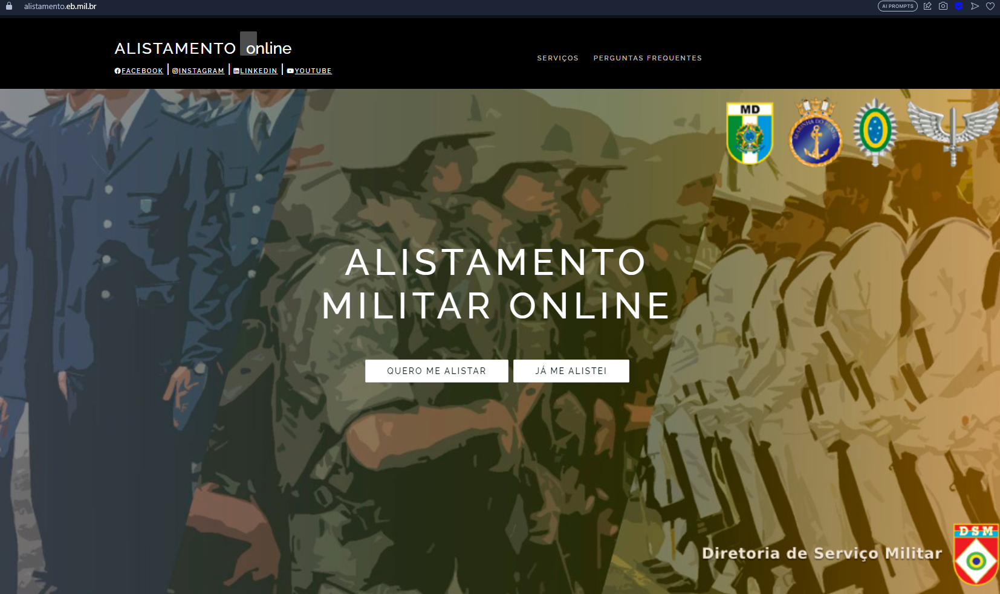
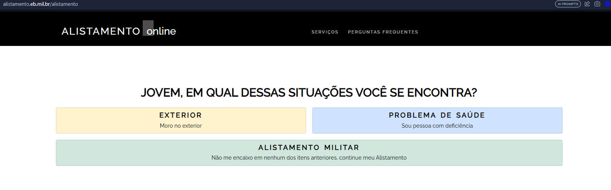
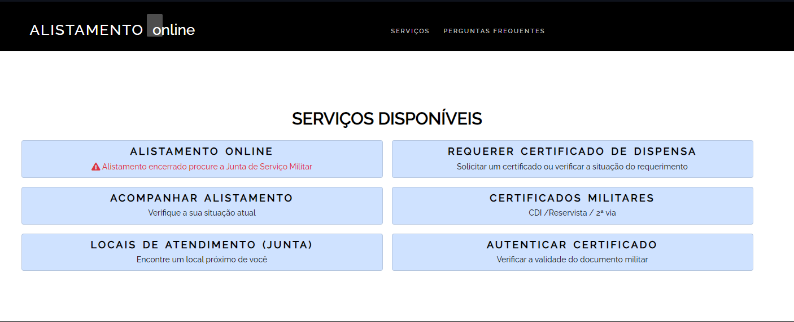

OBS: O alistamento militar é obrigatório, caso não seja feito o cidadão ficará em débito com o Serviço Militar é além de pagar uma multa, não poderá realizar algumas atividades como:
1. Acesse o site do Alistamento Militar e clique em "Quero me alistar".
2. Selecione a categoria que você se enquadra.
3. Caso selecione "Alistamento militar", você será redirecionado para realizar o login com a conta Gov.br ou se cadastrar na plataforma.
4. Acesse a página de serviços do site de alistamento e selecione "Alistamento Online".
5. Preencha o formulário e confirme as informações.
OBS: É importante guardar o registro de alistamento (RA) para acompanhar o processo.
Para acompanhar o processo e saber se você foi selecionado ou dispensado:
1. Acesse o site do Alistamento Militar (https://alistamento.eb.mil.br/)
2. Clique em "Já me alistei".
3. Em seguida, clique em "Acompanhar Alistamento".
4. Acesse sua conta no portal Gov.br.
5. Irá aparecer qual é a sua situação no processo, se foi dispensado ou passou para as próximas etapas.
Após a inscrição, você poderá seguir para a seleção geral, na qual passará por exames médicos e físicos, além de testes de conhecimentos gerais e psicológicos, e entrevista; ou será dispensado ou considerado excesso de contingente.
Se você foi dispensado ou considerado excesso de contingente, seu próximo passo é pagar uma taxa de R$ 5,65 e realizar o juramento à bandeira nacional de forma presencial. Feito isso, você receberá o certificado em cerimônia cívica apropriada. A documentação necessária para essa etapa é: carteira de identidade e comprovante de pagamento da taxa militar.
Caso tenha sido selecionado para a seleção geral, você receberá um email ou SMS com a data, hora e local de onde deverá comparecer para seguir o processo. Se o alistamento foi realizado de forma presencial, o local de apresentação será informado pelo servidor público que prestou o atendimento.
Se declarado apto na seleção anterior, você deverá participar da seleção complementar, comparecendo na organização designada (Marinha, Exército ou Aeronáutica) na data e hora prevista.
Caso tenha sido aprovado em todas as etapas anteriores, você será incluído em uma organização militar da ativa das Forças Armadas. O serviço militar inicial dos incorporados tem duração de 12 meses, podendo ser reduzido ou dilatado.